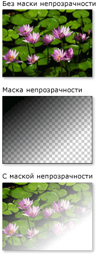
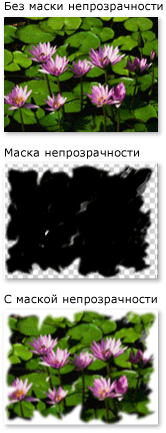
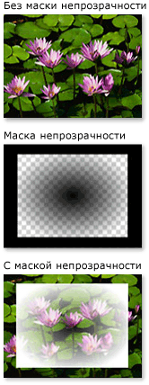

Общие сведения о масках непрозрачности
Маски непрозрачности позволяют делать части элемента или визуального элемента прозрачными или частично прозрачными. Для создания маски непрозрачности, применить Brush для OpacityMask свойства элемента или Visual. Кисть сопоставляется с элементом или визуальным элементом, а значение непрозрачности каждого пикселя кисти используется для определения результирующей непрозрачности каждого соответствующего пикселя элемента или визуального элемента.
Предварительные требования
В этом обзоре предполагается, что вы знакомы с Brush объектов. Общие сведения об использовании кистей см. в разделе Общие сведения о закрашивании сплошным цветом и градиентом. Сведения о ImageBrush и DrawingBrush, см. в разделе Рисование с помощью изображений, рисунков и визуальных элементов.
Создание визуальных эффектов с помощью маски непрозрачности
Маска непрозрачности работает путем сопоставления своего содержимого с элементом или визуальным элементом. Затем используются альфа-канал каждой из точек кисти для определения результирующей непрозрачности элемента или визуального элемента соответствующих точек. Фактический цвет кисти игнорируется. Если данная часть кисти является прозрачной, соответствующая часть элемента или визуального элемента тоже становится прозрачной. Если данная часть кисти является непрозрачной, непрозрачность соответствующей части элемента или визуального элемента не меняется. Непрозрачность, заданная маской непрозрачности, объединяется со всеми параметрами непрозрачности, заданными в элементе или визуальном элементе. Например, если элемент является непрозрачным на 25 процентов и применяется маска непрозрачности с диапазоном от полной непрозрачности до полной прозрачности, в результате получится элемент с диапазоном от коэффициента непрозрачности 25 процентов до полной прозрачности.
Note
Хотя примеры в этом обзоре демонстрируют использование масок непрозрачности на элементах изображения, маска непрозрачности может применяться к любому элементу или Visual, в том числе панелей и элементов управления.
Маски непрозрачности используются для создания интересных визуальных эффектов, таких как изображения или кнопки, которые исчезают из виду, для добавления текстур элементов или для объединения градиентов с целью создания стеклянных поверхностей. На следующем рисунке показано использование маски непрозрачности. Клетчатый фон используется для отображения прозрачных частей маски.

Пример использования маски непрозрачности
Создание маски непрозрачности
Для создания маски непрозрачности, необходимо создать Brush и применить его к OpacityMask свойства элемента или визуального элемента. Можно использовать любой тип Brush как маски непрозрачности.
LinearGradientBrush, RadialGradientBrush: Используется для создания элемента или визуального исчезания.
На следующем рисунке показана LinearGradientBrush используется в качестве маски непрозрачности.
Пример применения маски непрозрачности LinearGradientBrushImageBrush: Используется для создания текстуры и эффектов edge мягких или оборванных.
На следующем рисунке показана ImageBrush используется в качестве маски непрозрачности.
Пример применения маски непрозрачности LinearGradientBrushDrawingBrush: Используется для создания сложных масок непрозрачности из шаблонов фигур, рисунков и градиентов.
На следующем рисунке показана DrawingBrush используется в качестве маски непрозрачности.
Пример применения маски непрозрачности DrawingBrush
Градиентные кисти (LinearGradientBrush и RadialGradientBrush) особенно хорошо подходят для использования в качестве маски непрозрачности. Так как SolidColorBrush заполняет область одинаковым цветом, они делают непрозрачности маскирует; с помощью SolidColorBrush эквивалентно установке свойства элемента или визуального элемента OpacityMask свойство.
Использование градиента в качестве маски непрозрачности
Чтобы создать градиентную заливку, необходимо указать два или несколько ограничений градиента. Каждое ограничение градиента содержит описание цвета и положения. (Дополнительные сведения о создании и использовании градиентов см. в разделе Общие сведения о закрашивании сплошным цветом и градиентом.) Использование градиента аналогично использованию маски непрозрачности за исключением того, что вместо смешения цветов, градиент маски непрозрачности смешивает значения альфа-канала. Поэтому фактический цвет содержимого градиента не имеет значения. Имеет значение только альфа-канал или непрозрачность каждого цвета. Пример.
<!--With the opacity mask:-->
<Image
Width="200" Height="150"
Source="sampleImages\Waterlilies.jpg"
Margin="10"
HorizontalAlignment="Left"
Grid.Column="2" Grid.Row="3">
<Image.OpacityMask>
<LinearGradientBrush StartPoint="0.1,0.1" EndPoint="0.75,0.75">
<LinearGradientBrush.GradientStops>
<GradientStop Offset="0" Color="Black"/>
<GradientStop Offset="1" Color="Transparent"/>
</LinearGradientBrush.GradientStops>
</LinearGradientBrush>
</Image.OpacityMask>
</Image>
Задание ограничений градиента для маски непрозрачности
В предыдущем примере, определенный системой цвет Black используется в качестве начального цвета градиента. Так как все цвета в Colors класса, за исключением Transparent, являются полностью непрозрачными, они могут использоваться для простого определения начального цвета для градиентной маски непрозрачности.
Для дополнительного контроля над альфа-значения, при определении маски непрозрачности можно указать альфа-канал цветов с помощью ARGB шестнадцатеричного формата в разметке или с помощью Color.FromScRgb метод.
Задание непрозрачности цвета в XAML
В Язык XAML можно использовать шестнадцатеричный формат ARGB для указания непрозрачности отдельных цветов. ARGB шестнадцатеричное представление использует следующий синтаксис:
# AA вида rrggbb
Здесь aa — двузначное шестнадцатеричное значение, используемое для указания непрозрачности цвета. rr, gg и bb — двузначные шестнадцатеричные значения, используемые для указания насыщенности красного, зеленого и синего цветов. Шестнадцатеричная цифра может принимать значения от 0 до F (сначала цифры от 0 до 9, затем буквы от A до F). Наименьшее значение — 0, наибольшее — F. Альфа-значение 00 задает полностью прозрачный цвет, а альфа-значение FF — полностью непрозрачный цвет. В следующем примере используется шестнадцатеричный формат ARGB для задания двух цветов. Первый — полностью непрозрачный, второй — полностью прозрачный.
<Canvas.OpacityMask>
<RadialGradientBrush>
<RadialGradientBrush.GradientStops>
<GradientStop Offset="0" Color="#FF000000"/>
<GradientStop Offset="1" Color="#00000000"/>
</RadialGradientBrush.GradientStops>
</RadialGradientBrush>
</Canvas.OpacityMask>
Использование изображения в качестве маски непрозрачности
Изображения также могут использоваться в качестве масок непрозрачности. На следующем рисунке показан пример. Клетчатый фон используется для отображения прозрачных частей маски.

Пример использования маски непрозрачности
Чтобы использовать изображение в качестве маски непрозрачности, используйте ImageBrush для размещения изображения. При создании изображения для использования в качестве маски непрозрачности сохраните рисунок в формате, поддерживающем несколько уровней прозрачности, например Формат PNG (Portable Network Graphics). В следующем примере показан код, используемый для создания предыдущей иллюстрации.
<!-- With the Opacity Mask-->
<Image
Height="150"
Width="200"
Source="sampleImages/Waterlilies.jpg"
HorizontalAlignment="Left"
Margin="10"
Grid.Column="2" Grid.Row="1">
<Image.OpacityMask>
<ImageBrush ImageSource="sampleImages/tornedges.png"/>
</Image.OpacityMask>
</Image>
Использование мозаичного изображения в качестве маски непрозрачности
В следующем примере используется тот же образ с другим ImageBrush, но возможности заполнения этой кисти используются для создания мозаичных элементов изображения 50 пикселей в квадрате.
<!-- With the Opacity Mask -->
<Image
Height="150"
Width="200"
Source="sampleImages/Waterlilies.jpg"
HorizontalAlignment="Left"
Margin="10"
Grid.Column="2" Grid.Row="2">
<Image.OpacityMask>
<ImageBrush
Viewport="0,0,50,50"
ViewportUnits="Absolute"
TileMode="Tile"
ImageSource="sampleImages/tornedges.png"/>
</Image.OpacityMask>
</Image>
Создание маски непрозрачности из рисунка
Рисунки могут быть использованы как маски непрозрачности. Фигуры, содержащиеся в рисунке, могут быть сами заполнены градиентом, сплошным цветом, изображением или даже другим рисунком. На следующем рисунке приведен пример рисунка, используемого в качестве маски непрозрачности. Клетчатый фон используется для отображения прозрачных частей маски.

Пример применения маски непрозрачности DrawingBrush
Чтобы использовать рисунок в качестве маски непрозрачности, используйте DrawingBrush для размещения изображения. В следующем примере показан код, используемый для создания предыдущей иллюстрации.
<!-- With the Opacity Mask-->
<Image
Grid.Row="4" Grid.Column="5"
Height="150"
Width="200"
Source="sampleImages/Waterlilies.jpg">
<Image.OpacityMask>
<DrawingBrush>
<DrawingBrush.Drawing>
<GeometryDrawing>
<GeometryDrawing.Brush>
<RadialGradientBrush>
<RadialGradientBrush.GradientStops>
<GradientStop Offset="0" Color="Black" />
<GradientStop Offset="1" Color="Transparent" />
</RadialGradientBrush.GradientStops>
</RadialGradientBrush>
</GeometryDrawing.Brush>
<GeometryDrawing.Geometry>
<RectangleGeometry Rect="0.05,0.05 0.9,0.9" />
</GeometryDrawing.Geometry>
<GeometryDrawing.Pen>
<Pen Thickness="0.1" Brush="Black" />
</GeometryDrawing.Pen>
</GeometryDrawing>
</DrawingBrush.Drawing>
</DrawingBrush>
</Image.OpacityMask>
</Image>
Использование мозаичного рисунка в качестве маски непрозрачности
Как и ImageBrush, DrawingBrush можно сделать для мозаичного отображения ее рисунка. В следующем примере кисть рисунка используется для создания мозаичной маски непрозрачности.
<!-- With the Opacity Mask-->
<Button
Grid.Row="8" Grid.Column="5"
Height="100"
Width="200"
FontFamily="MS Gothic"
FontSize="16">
A Button
<Button.OpacityMask>
<DrawingBrush Viewport="0,0,0.25,0.25" TileMode="Tile">
<DrawingBrush.Drawing>
<GeometryDrawing>
<GeometryDrawing.Brush>
<RadialGradientBrush>
<RadialGradientBrush.GradientStops>
<GradientStop Offset="0" Color="Black" />
<GradientStop Offset="1" Color="Transparent" />
</RadialGradientBrush.GradientStops>
</RadialGradientBrush>
</GeometryDrawing.Brush>
<GeometryDrawing.Geometry>
<RectangleGeometry Rect="0.05,0.05 0.9,0.9" />
</GeometryDrawing.Geometry>
<GeometryDrawing.Pen>
<Pen Thickness="0.1" Brush="Black" />
</GeometryDrawing.Pen>
</GeometryDrawing>
</DrawingBrush.Drawing>
</DrawingBrush>
</Button.OpacityMask>
</Button>